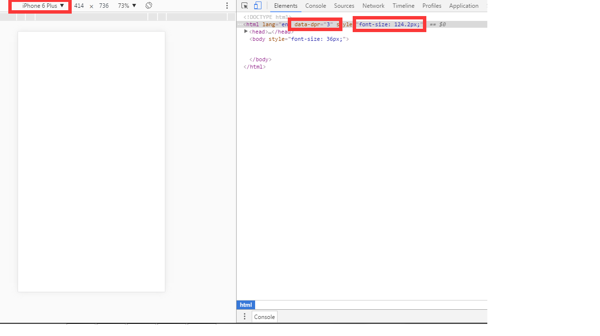

通过使用淘宝团队开源的Flexible.js来实现适配。
1、将js文件引入head部分预先加载。
（注意：不要设置meta标签中的device-width、maximum-scale、initial-scale该js文件会自动添加。）
2、执行这个JS后，会在html元素上增加一个data-dpr（只针对ios，安卓始终为1）属性，以及一个font-size样式，JS会根据不同的设备添加不同的data-dpr值(iphone为2，iphone6s为3)，同时会给html加上对应的font-size的值。
视觉设计师给到前端开发人员手中的视觉稿尺寸一般是基于640px、750px以及1125px宽度为准。(注意针对（考虑Retina屏）)
下面为一张天猫设计图，width:750px,height:内容决定
目前Flexible会将视觉稿分成100份（主要为了以后能更好的兼容vh和vw），而每一份被称为一个单位a。同时1rem单位被认定为10a。（width：100%;相当于10rem）
计算公式：rem=（原始的px值）/（rem基准值）；（基准值=设计图宽度/10）
其尺寸是176px * 176px；转换成rem是：176/(750/10)=2.346666666666667rem;
在移动页面中，文本大小不适合使用rem作为单位，而是使用：例如文本font-size：14px
安卓中字体大小： .flag .flag-btn {font-size: 14px;} (安卓设备data-dpr始终为1)
iphone5，iphone6中字体大小： [data-dpr="2"] .flag .flag-btn {font-size: 28px;} (iphone5，iphone6设备data-dpr始终为2)
iphone6s中字体大小： [data-dpr="2"] .flag .flag-btn {font-size: 42px;} (iphone6设备data-dpr始终为3)